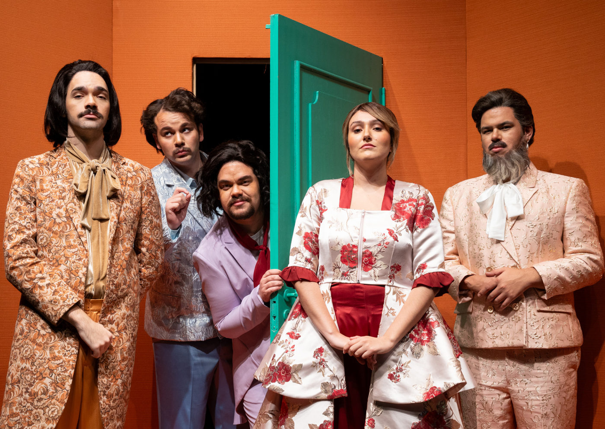

Theatro São Pedro apresenta “O Barbeiro de Sevilha” em versão inédita com direção feminina

Ópera de Giovanni Paisiello ganha nova encenação com dramaturgia centrada na personagem Rosina, sob condução de Maíra Ferreira e Ines Bushatsky. Temporada de 29 de maio a 1º de junho.
A temporada lírica do Theatro São Pedro, em São Paulo, segue em destaque com a estreia de “O Barbeiro de Sevilha”, ópera cômica do compositor Giovanni Paisiello (1740–1816), em montagem da Academia de Ópera e da Orquestra Jovem do Theatro São Pedro. Com direção musical de Maíra Ferreira e direção cênica de Ines Bushatsky, a obra ganha récitas nos dias 29, 30 e 31 de maio, às 20h, e 1º de junho, às 17h, com ingressos entre R$ 31 e R$ 102.
Baseada na peça de Pierre Beaumarchais, a ópera narra a tentativa do Conde Almaviva de conquistar Rosina, que vive sob a vigilância do possessivo Bartolo. A história se desenrola por meio de disfarces e situações inusitadas, conduzidas com astúcia pelo irreverente barbeiro Fígaro.
Uma nova Rosina e um olhar atual sobre clássicos
Diferente da versão mais famosa, de Rossini, a obra de Paisiello estreou em 1782 na corte russa de Catarina II, alcançando grande sucesso na época. Agora, ganha uma leitura contemporânea e feminista, em que Rosina deixa de ser coadjuvante e passa a protagonizar sua própria fuga rumo à liberdade.
“Criamos uma dramaturgia paralela que acompanha as tentativas frustradas de Rosina de escapar de seu cárcere. No fim, ela finalmente consegue sair pela plateia, rumo à rua”, revela Ines Bushatsky, que ambienta a história nas décadas de 1950 e 60.
A encenação destaca nuances psicológicas e sociais dos personagens. O Conde é o romântico idealista, Bartolo assume traços narcisistas, e Fígaro surge como um bon-vivant que costura as tramas com humor e leveza. Elementos cênicos como cenários móveis e engenhocas criadas por Fernando Passetti reforçam o tom farsesco e irônico da obra.
Música, formação e descoberta
À frente da Orquestra Jovem do Theatro São Pedro, Maíra Ferreira destaca a potência do trabalho com jovens artistas em formação:
“É desafiador revisitar uma versão menos conhecida da ópera e dar a ela um novo significado, com o frescor dos alunos da Academia. Há entrega, amadurecimento e descobertas genuínas no palco”, afirma a regente.
A proposta é promover experimentação e autonomia criativa entre os cantores em formação, reforçando o papel do Theatro São Pedro como espaço de inovação e ensino.
🔔 SERVIÇO
O Barbeiro de Sevilha De Giovanni Paisiello, com libreto de Giuseppe Petrosellini
📍 Theatro São Pedro – Rua Albuquerque Lins, 207 – São Paulo/SP
📅 Temporada: 29 de maio a 1º de junho de 2025
🕒 Horários: Quinta a sábado, às 20h; domingo, às 17h
🎟 Ingressos: Plateia R$ 102 / R$ 51 | 1º Balcão R$ 72 / R$ 36 | 2º Balcão R$ 62 / R$ 31
🔗 Ingressos online: [Sympla ou site do teatro]
👥 Classificação indicativa: 12 anos
⏳ Duração aproximada: 2h com intervalo
🎭 Ensaio geral aberto ao público: 27 de maio (terça), às 19h – entrada gratuita
Direção musical: Maíra Ferreira
Direção cênica: Ines Bushatsky
Cenografia: Fernando Passetti
Com: Academia de Ópera e Orquestra Jovem do Theatro São Pedro
Realização: Santa Marcelina Cultura
Apoio: Secretaria da Cultura, Economia e Indústria Criativas do Estado de São Paulo